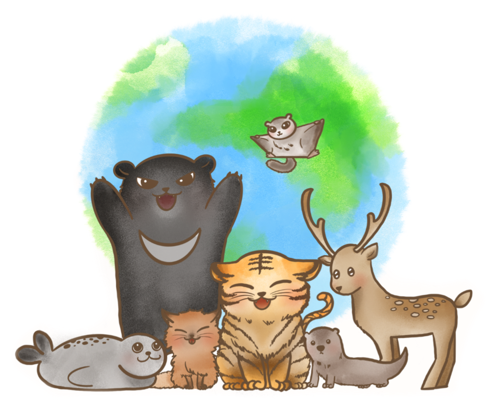
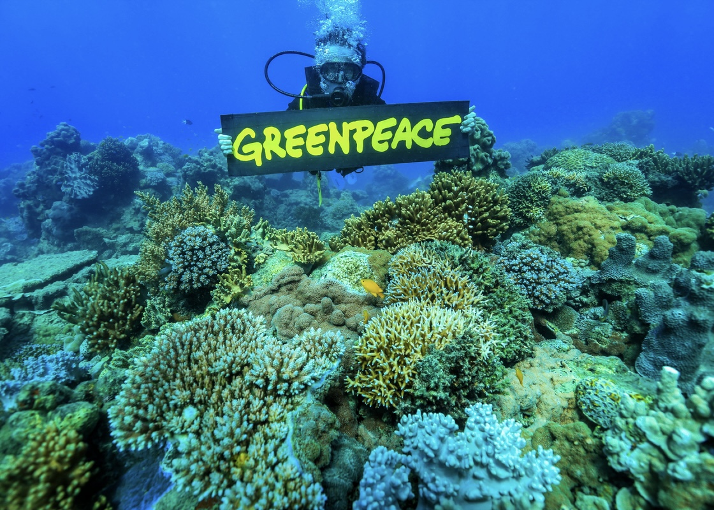
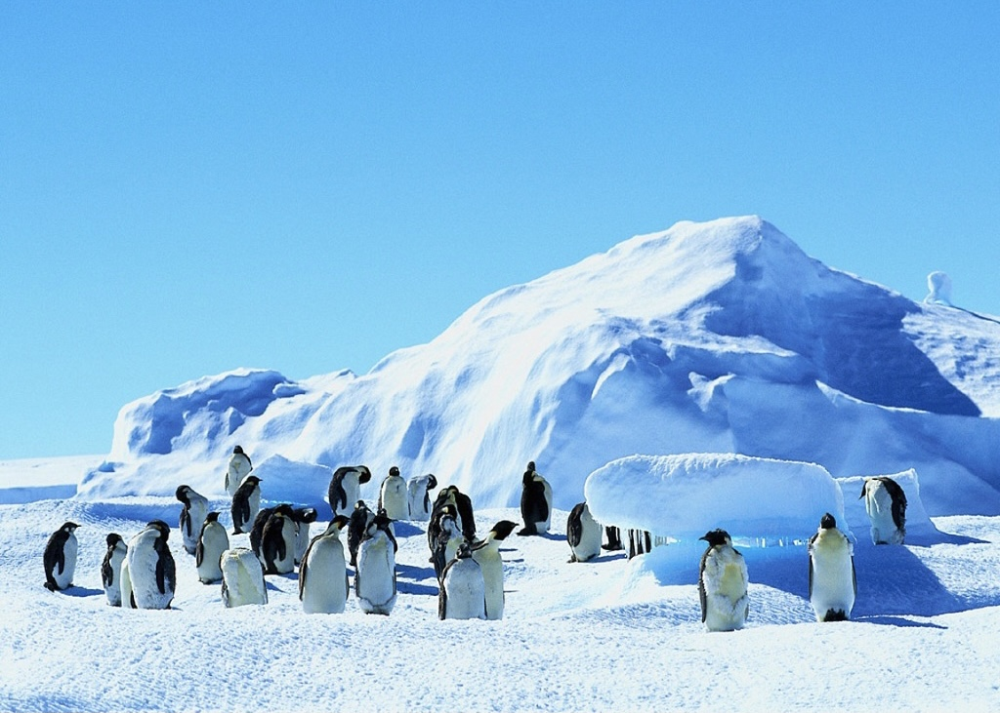
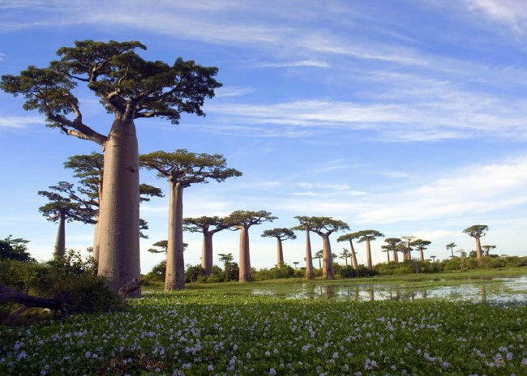
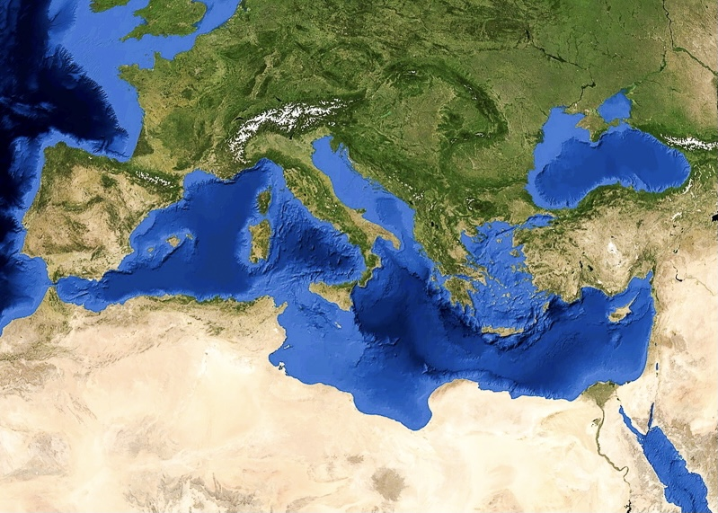

멸종 위기 동물

점점 사라져가는 동물들에게 관심을 주세요
아직 되돌릴 수 있습니다
멸종 위기종에는 어떤 동물들이 있을까?
더 보기




생태계와 동물들은 밀접한 연관이 있다는 걸 아시나요?
생태계가 보존되어야 동물들이 살고
동물들이 살아야 생태계가 유지됩니다
많은 관심을 주세요!
지금 전세계에서는 멸종 위기 동물들을 지키려는 다양한 노력을 하고 있습니다
우리들의 작은 관심으로 사라져가는 동물들과
아름다운 생태계를 지켜나가요